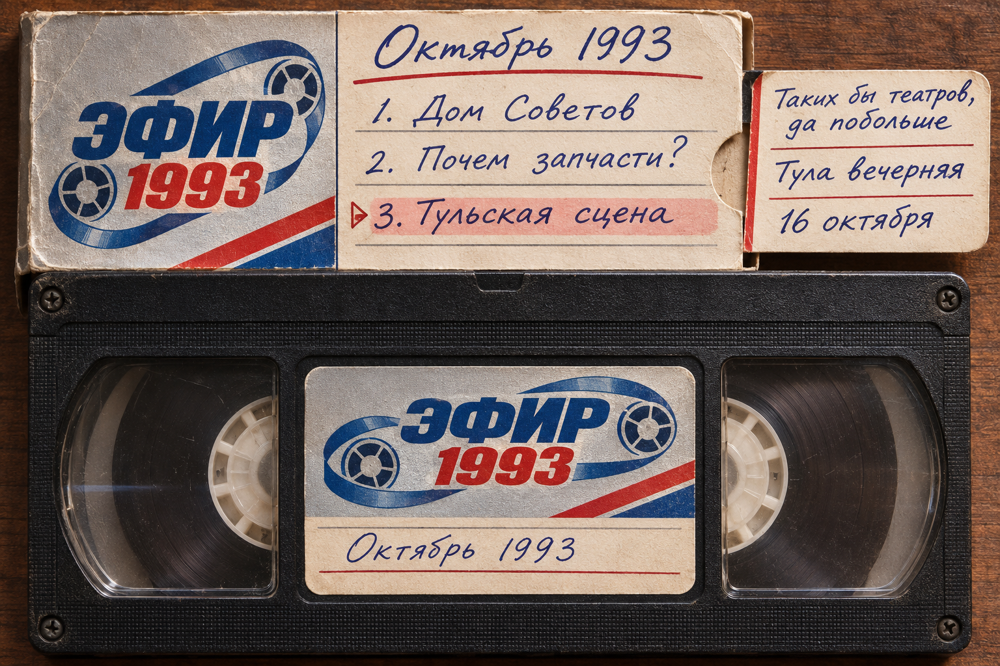

Журнал
Видеотека
Телетекст
Найти в архиве
Увеличить макет

Современные эскизы архива · Октябрь 1993
К макету ×
Найти в архиве
Все материалы
Документы
Пресса и листовки
Фотографии
Кинохроника
Предметы
Открыть источник ↗
Лицензия ↗
← К результатам поиска
Закрыть ×